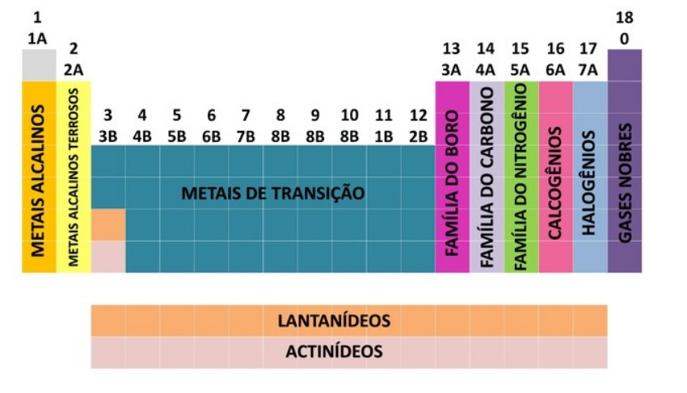

Uma das formas que os elementos químicos são organizados
é através de famílias, que correspondem as sequências
verticais da tabela periódica.
As 18 colunas da tabela agrupam os elementos de acordo com
as semelhanças nas propriedades químicas.
Organizar os elementos químicos em famílias foi uma maneira
prática de estruturar as várias informações encontradas e
apresentá-las de maneira simples.
As semelhanças entre os elementos de uma mesma família
ocorrem porque o número de elétrons de valência
do átomo no estado fundamental é o mesmo para os membros de
determinado grupo.

Família:
1 - Metais Alcalinos
Características:
Sólidos e brilhantes em condições ambientes.
Muito reativos, macios e bons condutores de eletricidade.
Exemplo de substancia composta:
[NaCl] - Reagem com halogênios e formam sais.
Família:
2 - Metais Alcalinos Terrosos
Características:
Menos reativos e mais duros que o grupo 1. Sólidos prateados
e com boa condutividade.
Exemplo de substancia composta:
[CaSO4] - Formando sais e óxidos.
Família:
3 á 12 - Metais de transição
Características:
Formam complexos. São sólidos metálicos, duros e quebradiços,
com exceção do mercúrio, que é líquido.
Exemplo de substancia composta:
[AgNO3] - Em minerais na forma de óxidos.
Família:
13 - Família do Boro
Características:
Sólidos em condições ambientes, prateados, exceto o boro.
Exemplo de substancia composta:
[B2O3] - encontrado em minerais na forma de óxidos.
Família:
14 - Família do Carbono
Características:
Sólidos em condições ambientes.
Átomos de C e Si podem se arranjar em
cadeias e produzir uma enorme variedade
de substâncias.
Encontrados Em organismos vivos e
na forma de silicatos ou óxidos.
Família:
15 - Família do Nitrogênio
Características:
Sólidos, exceto o nitrogênio, que se apresenta na
forma gasosa em condições ambientes.
Exemplo de substancia composta:
[NO2] - Atmosfera, organismos vivos e minerais.
Família:
16 - Calcogênios
Características:
Sólidos, exceto o oxigênio, que se apresenta na forma
gasosa em condições ambientes.
Exemplo de substancia composta:
[ZnS] - Atmosfera, organismos vivos e minerais.
Família:
17 - Halogênios
Características:
Formam moléculas diatômicas e são muito reativos.
São maus condutores de eletricidade e calor.
São agressivos para seres vivos e ambiente.
Exemplo de substancia composta:
[HCl] - Estão presentes em substâncias orgânicas e minerais.
Família:
18 - Gases nobres
Características:
São muito estáveis e encontrados na forma de gases.
Dificilmente formam substancias compostas.
Formam os gases na atmosfera.
Família:
Lantanídeos
Características:
Estes elementos são chamados terras-raras porque se
encontram na forma de óxidos e junto com os actinídeos
constituem os elementos de transição interna.
Família:
Actinídeos
Características:
São os chamados elementos de transição interna
e todos os isótopos destes compostos são radioativos.